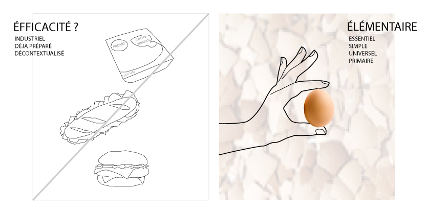
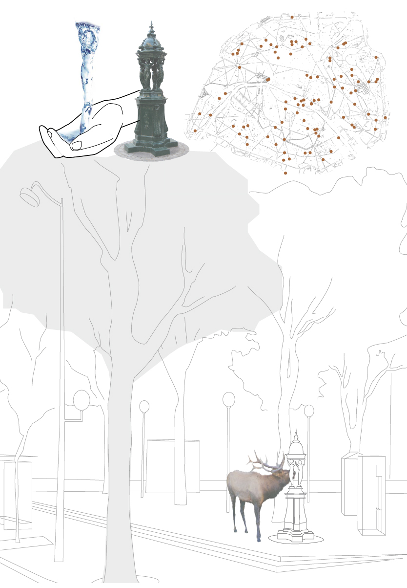
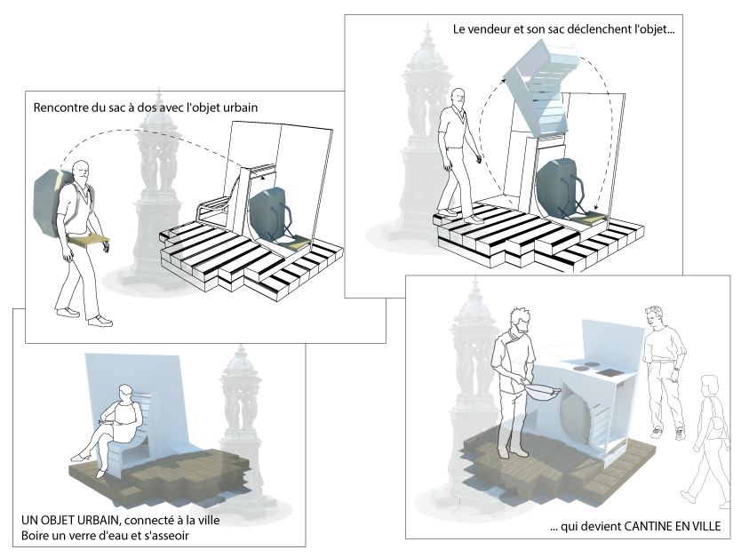
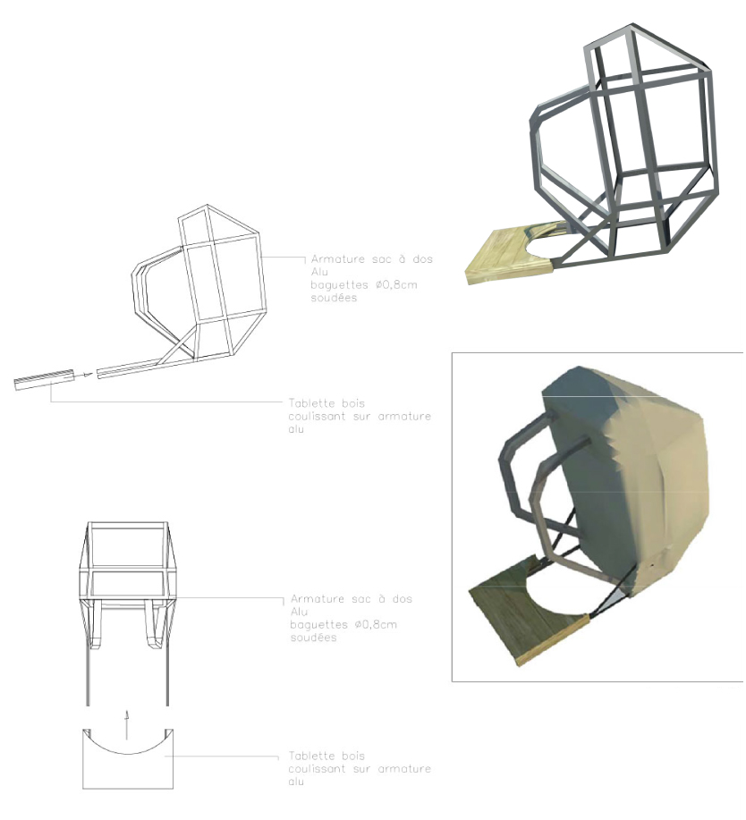
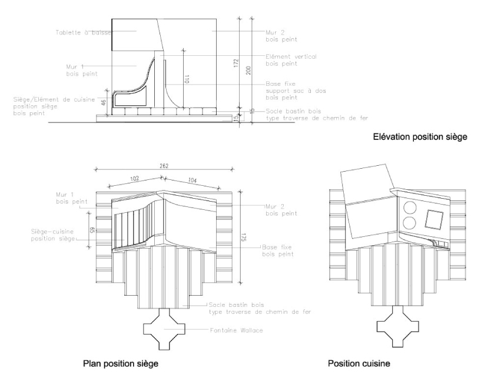
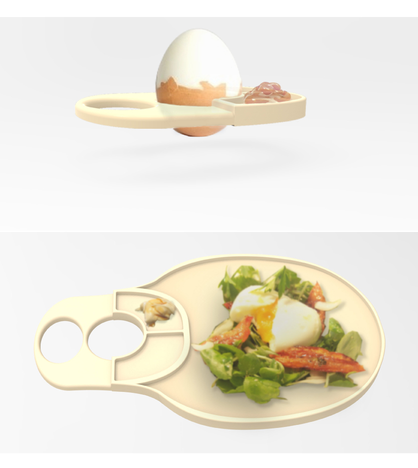
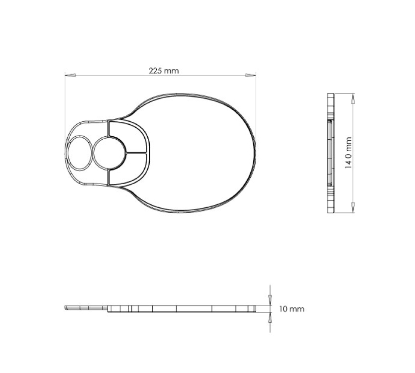

Degré de mobilité et d’intimité
Et si l’appropriation temporaire, d’un mobilier urbain oublié, par des cuisiniers ambulants, pouvait créer des usages nouveaux à Paris ?
L’œuf de Wallace est une installation de cuisine urbaine associée à une fontaine Wallace existante. Sa multifonctionnalité permet au mobilier urbain d’être le vecteur de nombreux usages, autant nomades que sédentaires, intimistes ou visibles.
Aliment élémentaire
Les qualités nutritives, de conservation et de recyclage, font de l’oeuf, un aliment élémentaire et naturel rivalisant d’efficacité et de qualité avec le fast food, tout en sortant de sa logique traitant le produit fini, préparé et congelé en usine.
Ressources situées
Pour permettre à cette cuisine temporaire de participer de la logique de l’espace public parisien, et de le vitaliser en même temps, l’Oeuf de Wallace se place près d’un point d’eau. La fontaine pourvoit en effet de l’eau pour la cuisine, pour accompagner le repas et une pose assise. Mais sa présence est aussi remarquable dans le paysage, souvent associée à un trottoir élargie, une placette ou un parc.
2 objets, 3 usages
L’œuf de Wallace permet 3 usages grâce à différentes configurations du mobilier. La transformation est possible grâce à une « clé » que possèdent les vendeurs ambulants, le sac à dos. Ce sac leur donne ensuite la possibilité de vendre des œufs durs cuits dans le point de vente fixe associé à la fontaine.
  Une vaisselle urbaine ?
À l’Oeuf de Wallace, les oeufs se dégustent dans des coquetiers portatifs biodégradables ou des supports multi-recette empilables. De deux tailles différentes, ces supports sont spécialement adaptés à la consommation dans la rue d’oeufs durs ou de plats cuisinés à base d’oeufs.
 